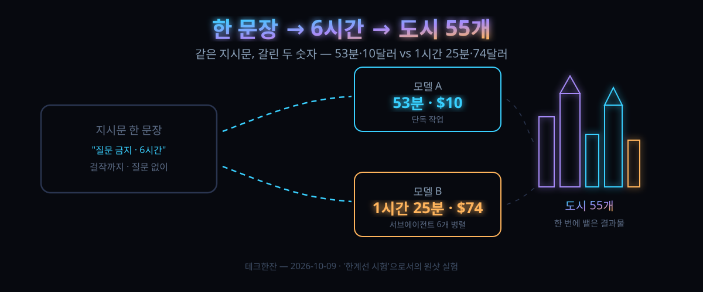

10/7 공개된 '한 문장 6시간' 실험 — 55개 도시를 지운 두 모델, 10달러와 74달러의 갈림길

결론부터 말하면, 이 글은 "AI가 역시 대단"이 아니다. 같은 문장을 두 모델에 던졌을 때 시간·비용·결과물 성향이 세 자리 숫자로 갈렸다는 기록이다. 그리고 그 결과물을 본 사람 절반이 감탄 대신 기분을 나빠했다고 고백했다는 기록이기도 하다.
10월 7일, 데이터 시각화 연구자 피오트르 미그우가 자기 블로그에 짧은 실험 하나를 올렸다. 이탈로 칼비노의 소설 『보이는 보이지 않는 도시들』에 나오는 도시 55개를 3D 웹으로 구현하라는 지시 하나. 질문 금지, 시간 6시간. 그 문장을 최신 모델 두 종류에 그대로 넣었더니 한쪽은 53분 만에 10달러, 다른 쪽은 1시간 25분에 74달러가 나왔다.
해커뉴스에는 10월 8일 올라 표 381을 받았다. 스레드에서 가장 길게 달리 논점은 성능이 아니라 "누가 만든 거고, 누가 뭘 느끼는가"였다.
30초 요약
| 항목 | 내용 |
|---|---|
| 무슨 일 | 『보이는 보이지 않는 도시들』(이탈로 칼비노, 도시 55개가 각기 다른 감정을 건축으로 표현하는 소설)을 3D 인터랙티브 웹으로 만드는 태스크를, 질문 금지·6시간 상한의 한 문장 프롬프트로 두 모델에 똑같이 지시한 비교 실험 |
| 지시문 | "이탈로 칼비노의 『보이는 보이지 않는 도시들』 전체를 three.js(pnpm)로 시각화해라. 질문하지 마라, 한 번에 끝내는 작업이다. 6시간을 준다. 걸작이 될 때까지 써라" (원문 표기가 아닌 의미 그대로의 요약) |
| 결과 A | GPT 계열 최신 모델(코덱스 환경): 53분, 중간 노력 설정, API 토큰 약 10달러. 완성은 됐으나 쓸데없는 개념·주석이 붙는 'AI 티'와, 경쟁 모델 특유의 베이지 배경·번호 표기 스타일을 그대로 옮겨 온 흔적 |
| 결과 B | 클로드 최신 플래그십(클로드 코드 환경): 실사용 1시간 25분, 서브에이전트 6개를 병렬로 돌려 합산 약 7시간 작업량, API 토큰 약 74달러. 저자가 "압도당했다"고 쓴 결과물 |
| HN 온도 | 표 381. 상위 댓글은 감탄이 아니라 "남의 취미 프로젝트에 자기 만족감이 빠졌다"는 허탈. graphics 분야 30년차 개발자는 "도시마다 줌인하면 개폐되는 다리·움직이는 낙타·관객석까지 있다"며 오히려 극찬. "최악의 책에겐 최상의 일"과 "덕분에 이 책을 알게 됐다"가 한 스레드에 공존 |
| 핵심 논점 | "한 번에 뱉은 출력물은 제품이 아니라 한계선 시험이다" — 비교 대상은 사람의 며칠이 아니라 다른 모델의 한 번에 뱉기. 그리고 "이건 올라갈 천장이 아니라 새로 깔린 바닥이다"라는 반론 |
1. 무엇이 터졌나
실험자는 데이터 시각화와 'explorable explanation(직접 만져보며 이해하는 설명물)'을 직업으로 삼는 사람이다. 본인 고백에 따르면 LLM은 그에게 축복인 동시에 저주였다. 큰 모델일수록 첫 초안은 번쩍인데, 그 위에 붙은 군더더기를 걷어내고 겹친 레이아웃을 바로잡는 데 오히려 더 오래 걸렸다. 로컬 소형 모델로 쇼핑몰 랜딩페이지 정도는 이미 그럴듯하게 나오는 시대인데, 인터랙티브 시각화는 확실히 다른 급이라는 전제도 붙였다.
계기는 며칠 전 SNS에서 본 다른 사람의 결과물이었다. "카메라 초점 원리를 설명하는 인터랙티브 렌즈 실험실을 만들게 시켰는데, 한 번에 1시간 26분에 API 비용 25.66달러가 나왔다"는 글(작성자 본인이 직접 공개한 수치). 최소주의는 아니지만 어쨌든 압도적이었다는 반응과 함께, 저자는 자기 실험 주제를 광학 대신 소설로 바꿨다. 소재로 고른 『보이는 보이지 않는 도시들』은 마르코 폴로가 쿠빌라이 칸에게 도시 55개를 소개하는 형식의 소설로, 각 도시가 하나씩의 감정이나 심리 상태를 건축·동선·주민 행동으로 표현하는 구조다. 저자는 2019년에도 당시 최신 모델(GPT-2)로 이 소설의 도시 생성 시도를 한 적이 있어서, 7년 만의 재실험인 셈이다.
그리고 지시문이 핵심이다. 길이가 아니라 조건이 세 개다. ① 특정 라이브러리(three.js)와 패키지 매니저(pnpm)를 못 박았다 ② 중간에 물어보지 말라 — 한 번에 끝내기를 선언했다 ③ 시간 상한을 주되 "걸작이 될 때까지"라는 품질 목표를 붙였다. 질문 금지 조항은 에이전트형 도구가 작업 중에 자꾸 확인을 요청해 흐름이 끊기는 경험을 저자가 여러 번 했기 때문에 붙었다.
결과 두 개는 위 표에 정리한 대로 갈렸다. 흥미로운 건 B 쪽의 "일찍 끝내기" 사건이다. 모델이 "6시간의 절반 정도를 썼다. 남은 다듬기는 수확체감이지만 원하면 한 바퀴 더 한다"고 보고했는데, 실제로는 6시간 중 1시간 25분만 쓰고 멈췄다. 저자는 처음엔 '약속 시간을 안 채운 모델'을 타박하려다 결과물을 열어보고 말을 삼켰다. 서브에이전트 6개를 동시에 굴려 합산하면 약 7시간어치의 작업이었다는 계산이 붙었기 때문이다. 에이전트에게 '시간'은 벽시계와 노동량이 서로 다른 축이 될 수 있다는 뜻이다.
2. 왜 대단한가
① 값과 시간이 세 자리 숫자로 갈린 '동일 조건 비교'라서
모델 비교 글은 대체로 벤치마크 점수를 옮겨 그린다. 이건 다르다. 같은 사람, 같은 문장, 같은 책, 같은 도구 규격. 갈린 건 모델뿐이다. 53분·10달러 대 85분·74달러. 비용 7배 차이가 단순한 '요청당 토큰 단가' 때문이 아니라 서브에이전트 병렬 편성에서 나왔다는 점도 보인다. 여러 하청 작업자를 한꺼번에 굴리는 구조 자체에 값이 붙고, 그 값이 결과물 밀도(세부 연출)로 돌아왔다. 벤치 점수표에서는 절대 못 보는 종류의 비교다.
② '질문 금지 + 시간 상한'이라는 프롬프트 구조가 그대로 재사용 가능해서
저자는 이 실험의 진짜 산출물이 결과물이 아니라 지시문이라고 했다. "걸작이 될 때까지" 같은 목표형 문장은 모델이 자기 판단으로 종료 시점을 고르게 만들고, "질문하지 마라"는 중간 차단벽을 없앤다. 둘 다 개발자 사이에서 이미 유행 중인 '자동 묶어 맡기기'의 표준 형태다. 저자 본인도 "같은 문장을 다른 모델·다른 하네스에 던져 보고 결과를 비교하라"고 글 말미에서 권한다.
③ 모델 간 '스타일 전이' 현상이 관찰돼서
A 쪽 결과물에서 저자가 발견한 건 기능적 결함이 아니라 취향의 흔적이었다. 경쟁 모델이 즐겨 쓰던 베이지 배경과 두 자리 번호 표기가 그대로 옮겨 와 있었다. 대규모 학습 데이터에 서로의 결과물이 섞여 있다는 뜻이기도 하고, '어떤 모델 티가 난다'는 구분이 앞으로 흐려질 수 있다는 뜻이다. 디자인의 변별력이라는 시대가 생각보다 빨리 접힐 수 있다.
④ '상한 테스트'라는 새로운 리뷰 문화가 붙어서
댓글창의 핵심 반론은 이렇다. "이 결과물을 만든 건 1시간 25분이라서 놀라운 게 아니다. 사람이라면 한 번에 나올 수 없는 급이라는 게 놀라운 거다. 한 번에 뱉은 출력은 제품이 아니라 그 모델이 어디까지 갈 수 있는지 재는 자다." 이 관점에서는 74달러도 합리적이다. 사람이 며칠을 투자해야 할까를 재는 값이 아니라, 다음 반복부터 어디까지 기대할 수 있는지를 미리 사는 값이기 때문이다.
3. 바로 써먹기
이 실험에서 개발자가 훔칠 건 프롬프트 뼈대다. 자기 분야에 그대로 끼우면 된다.
<결과물>을 <라이브러리·패키지 매니저>로 만들어라.
질문하지 마라, 한 번에 끝내는 작업이다.
<N>시간을 준다. <품질 목표>가 될 때까지 써라.칸 네 개만 자기 것으로 채우면 된다. 결과물(예: 고객 온보딩 마법사, 지사별 매출 대시보드), 스택 고정(three.js/pnpm, 리액트/브이티 등 — 고정을 안 하면 모델이 마음대로 골라 재현이 어려워진다), 시간 상한, 그리고 '걸작'에 해당하는 자기 품질 기준. 제일 어려운 건 마지막 칸이다. "좋게 만들어라"는 판정 불가 문장이어서 효과가 약하고, "모바일 390px에서 겹침 없이, 로딩 3초 안에"처럼 기계가 검사할 수 있는 목표로 써야 종료 시점 판단이 붙는다.
묶어 맡기기 배치을 굴리기 전 점검표
| 단계 | 할 일 | 판정선 |
|---|---|---|
| 1. 비용 캡 계산 | 모델의 시간당 실측 비용을 먼저 재기 — 이 실험의 B 쪽처럼 서브에이전트가 병렬로 늘면 지시한 시간 × 단가가 성립하지 않는다 | 6시간 상한을 잡으면 6시간 × 단가 × 예상 병렬 수까지 상한이 열린다. 먼저 상한 금액을 정하고 그 안에서 도는 구조로 |
| 2. 스택 강제 | 라이브러리·패키지 매니저·실행 커맨드까지 지시문에 박기 | 재실행 시 결과가 다른 프로젝트 구조로 나오면 비교 실험이 성립하지 않는다 |
| 3. 종료 조건 | "걸작"을 검사 가능한 문장으로 번역 | 예: "모든 화면에서 텍스트 겹침 0건", "55개 항목 전부 클릭 가능". 검사할 수 없는 목표는 제멋대로 조기 종료하는 원인이 된다 |
| 4. 병렬 허용 여부 | 서브에이전트 병렬을 막을 건지 정하기 | 막으면 시간당 비용은 줄지만 결과물 밀도도 준다. 이 실험의 74달러는 병렬을 허용한 값이다 |
우리 로컬 환경 관점에서 하나 더. 이 실험은 전부 API 종량제 기반이다. 같은 지시문을 로컬 모델에 붙이면 비용 곡선이 완전히 달라지지만, 1시간이든 7시간이든 굴리는 동안 자기 GPU가 잠긴다는 사실이 비용의 형태로 되돌아온다. 종량제는 '돈'을 사고 로컬은 '시간'을 산다. 묶어 맡기기 배치을 상시 돌릴 계획이라면 로컬, 오늘 딱 한 번 상한을 재볼 계획이라면 API가 각자 유리한 지점이다.
4. 해외 반응 쟁점
댓글창은 감탄과 허탈이 정확히 반반이었다. 크게 네 갈래.
| 갈래 | 논지 (댓글창 분위기 요약) |
|---|---|
| 가장 긴 상위 댓글: "감탄은 하는데, 기분이 안 좋다" | "예전엔 어떤 아이디어에 사람이 그 정도로 파묻히는 걸 부러워했는데, 이제는 회의 10분 전에 누가 타이포 깔끔하게 뽑아온 발표자료 같다"는 고백. 대댓글은 "몇 주 걸리던 게 10분이면 몇 주 치 급여가 증발한 것인데, 언제쯤 '이 정도면 됐다'고 할 수 있나"로 확장됐다 |
| 공예파: "만드는 재미를 통째로 넘기면 남는 게 뭔가" | 이 소설을 읽고 직접 도시를 손그림으로 그리고 있는 사람이 자기 작업 시간을 예로 들며 합류. "10년 뒤 결과물을 더 기억할 쪽은 어디냐"는 반문이 붙었다. 반대편은 "취미를 AI에 넘기는 건 아까워하면서 업무는 왜 안 넘기나"로 반박 |
| 장인파: "사람들은 줌인을 안 해봤다" | 그래픽스 엔진 30년차라는 개발자의 최장 댓글이 반전. "도시마다 확대하면 다리가 개폐하고, 사막을 낙타가 걷고, 건물이 불꽃이 튀며 사라지고, 관람차가 굴러간대? 디테일의 양이 믿기지 않는다". 다만 대댓글은 "그래서 그 디테일은 무슨 뜻인가 — 아무 의미 없이 많은 건 결국 지저분한 잡동사니"으로 다시 갈렸다 |
| 문학파: "이 책에겐 최악의 일이다" | "책의 재미는 마음속으로 도시를 마음껏 부풀리는 건데, 이 시각화를 먼저 보면 기억이 그 도시들로 대체될까 두렵다"는 경고. "이 책의 본질은 반기호학·언어의 한계에 대한 것인데 시각화는 정반대 극단"이라는 평. 반대로 "덕분에 책 자체를 처음 알게 됐다"는 신규 유입도 실제로 댓글창에 보였다 |
5. 마시기 전 주의
첫째, 53분·10달러·1시간 25분·74달러는 전부 실험자 1인이 자기 계정에서 측정한 한 번의 값이다. 재현되면 다행이고, 모델 버전·요금제·에이전트 편성에 따라 달라진다. 특히 6시간 상한을 모델이 자기 판단으로 자른 사건이 있었으니, 같은 조건 두 번째 실행은 다른 시간·다른 비용이 나올 확률이 높다.
둘째, 결과물의 '좋다/나쁘다'는 저자의 주관이고, 저자 본인도 글에서 "최소주의가 없다"는 비판을 스스로 받아들였다. 디자인 품질의 대중 평가는 댓글창에서도 갈렸다.
셋째, 55개라는 수는 소설의 도시 개수다. 소설을 읽은 독자가 경고하듯, 이 시각화는 원작의 층위(언어와 의미에 대한 소설)를 재현한 것이 아니라 껍데기의 건축 연출물이다. '책 요약물'로 쓰면 내용 자체가 어긋난다.
넷째, 책의 번역본 존재 여부와 무관하게 원작 텍스트 자체는 저작권 있는 저작물이다. 모델이 원문 대목을 결과물에 어떻게 옮겼는지는 실험 글에서 검증되지 않았으니, 상업 재현이라면 그 부분부터 직접 확인해야 한다. 그리고 '질문 금지 한 번에 맡기기' 방식은 검수 단계를 지시문으로 제거한 배치다 — 결과물 검수는 지시문이 아니라 사람이 마지막에 해야 한다.
바로 가기
같이 읽기
- '중간 아이'의 반란 — 모델 세대교체에서 값표가 먼저 움직이는 자리
- 10/7 나온 Haiku 5.5, 입력 $0.10 — 90% 내린 값표에서 100K 토큰을 넘기는 순간 5배 뛰는 함정
- 9/29 뒤집힌 "MCP는 안 쓴다" — 표 635개가 몰린 도구 호출 재설계, 코드 모드란